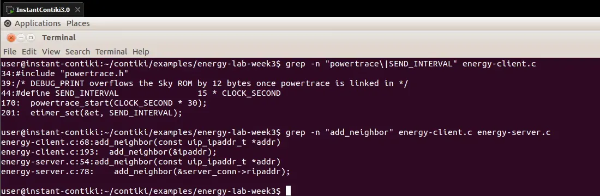
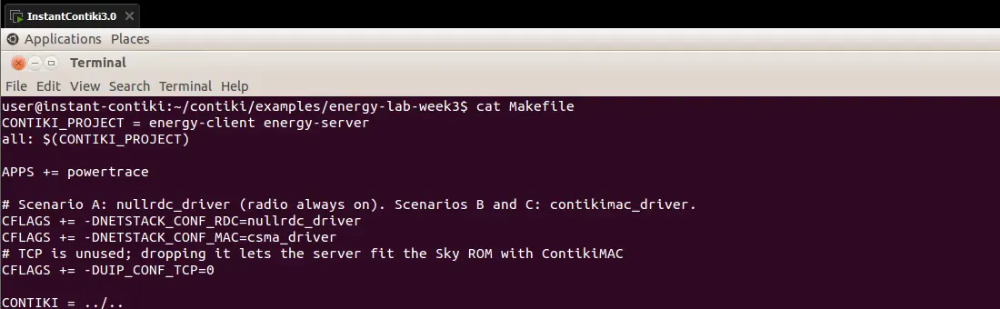
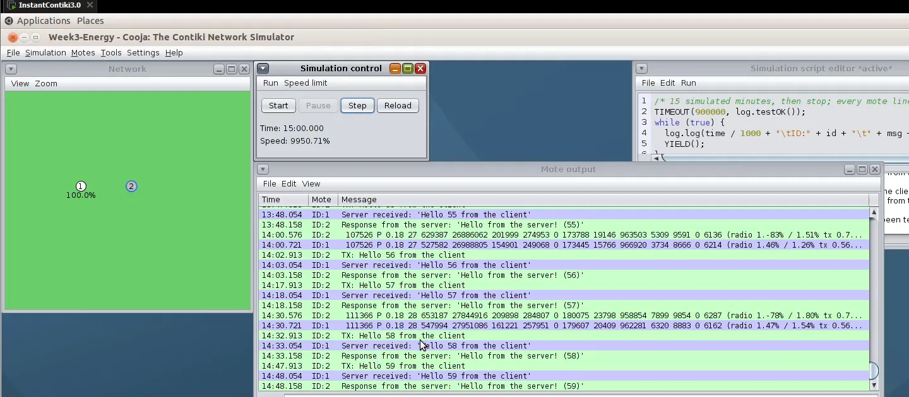
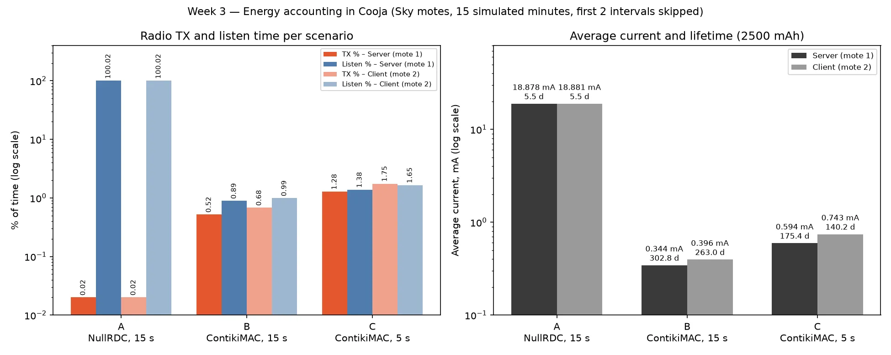

CSE 427 · Wireless Sensor Networks
Yahya Efe Kuruçay · 20220808005 · Akdeniz University, Computer Engineering · lab recorded 18 October 2026
The week 3 energy accounting lab: one Sky UDP client sends numbered messages to one Sky UDP server, and both print Powertrace lines every 30 seconds. Three scenarios run on the same topology for the same 15 simulated minutes, and the logs show where each mote’s time goes: CPU, low power mode, radio transmit and radio listen. From that the average current and a rough battery lifetime follow.
| Item | Value |
|---|---|
| Environment | Instant Contiki 3.0 in VMware Workstation, Cooja with MSPSim |
| Motes | 2 Sky motes: mote 1 = UDP server at (0, 0), mote 2 = UDP client at (10, 0) |
| Radio medium | UDGM, range 50 m, TX and RX success ratio 100 % |
| Stack | IPv6 + CSMA; only the RDC driver and the send interval change |
| Duration | 15 simulated minutes per scenario, random seed 123456; the first two 30 s intervals are skipped as warm-up |
| Scenario | RDC (Makefile) | Send interval |
|---|---|---|
| A — continuous listening | nullrdc_driver | 15 s |
| B — duty cycling | contikimac_driver | 15 s |
| C — higher traffic | contikimac_driver | 5 s |
The client and server are Contiki 3.0’s examples/udp-ipv6 programs with Powertrace added: #include "powertrace.h" and powertrace_start(CLOCK_SECOND * 30) right after PROCESS_BEGIN().


Two problems had to be solved before the lab worked:
TX: Hello N, but no radio frame followed and the server received nothing — the unmodified udp-ipv6 example failed the same way. The Sky platform sets UIP_CONF_ND6_SEND_NA 0 in contiki-conf.h: IPv6 neighbour discovery is off because RPL is expected to fill the neighbour table. With two motes and no RPL root the table stayed empty and uIP dropped every packet. Both programs now add the other mote to the neighbour table (add_neighbor(), link-layer address derived from the IPv6 interface identifier).DEBUG_NONE in both programs and CFLAGS += -DUIP_CONF_TCP=0 (TCP is unused) fixed it; the TX: and Server received: lines are plain printfs so the packet delivery ratio can still be counted.
TX: Hello N, server Server received, and a Powertrace line from each mote every 30 s.After P: address, sequence number, then the cumulative all_cpu all_lpm all_transmit all_listen ticks used below. Two consecutive server lines per scenario:
A — NullRDC, 15 s
nullsec CSMA nullrdc, channel check rate 128 Hz, radio channel 26
150718.705 ID:1 19206 P 0.18 4 49571 4864966 1248 4914628 ...
180718.725 ID:1 23046 P 0.18 5 59140 5838093 1376 5897539 ...B — ContikiMAC, 15 s
nullsec CSMA ContikiMAC, channel check rate 8 Hz, radio channel 26
150719.743 ID:1 19206 P 0.18 4 115327 4799171 40631 47651 ...
180719.72 ID:1 23046 P 0.18 5 130968 5766220 44361 56301 ...C — ContikiMAC, 5 s
nullsec CSMA ContikiMAC, channel check rate 8 Hz, radio channel 26
150720.409 ID:1 19206 P 0.18 4 184829 4729736 77898 71758 ...
180720.528 ID:1 23046 P 0.18 5 214286 5682975 89084 85248 ...The counters are cumulative, so every row uses the difference of two consecutive lines of the same mote: ΔCPU, ΔLPM, ΔTX, ΔRX, and ΔT = ΔCPU + ΔLPM.
Example, scenario B, server, 150 s → 180 s: ΔCPU = 15641, ΔLPM = 967049, ΔTX = 3730, ΔRX = 8650, ΔT = 982690 → CPU 1.59 %, TX 0.38 %, listen 0.88 %, radio on 1.26 %. powertrace_to_csv.py does this for every interval and writes the CSV columns Time, Mote, CPU %, LPM %, TX %, RX %, Radio On %.
| Scenario | Mote | CPU % | LPM % | TX % | Listen % | Radio on % | Iavg | Lifetime | PDR |
|---|---|---|---|---|---|---|---|---|---|
| A | 1 server | 0.99 | 99.01 | 0.02 | 100 | 100 | 18.88 mA | 5.5 days | 59 / 59 |
| A | 2 client | 1.08 | 98.92 | 0.02 | 100 | 100 | 18.88 mA | 5.5 days | 59 / 59 |
| B | 1 server | 1.84 | 98.16 | 0.52 | 0.89 | 1.41 | 0.344 mA | 302 days | 59 / 59 |
| B | 2 client | 2.19 | 97.81 | 0.68 | 0.99 | 1.66 | 0.396 mA | 263 days | 59 / 59 |
| C | 1 server | 3.26 | 96.74 | 1.28 | 1.38 | 2.66 | 0.594 mA | 175 days | 179 / 179 |
| C | 2 client | 4.15 | 95.85 | 1.75 | 1.65 | 3.41 | 0.743 mA | 140 days | 179 / 179 |
Averages over 27 intervals. Listen in A prints as 100.02 % because Energest samples the radio and CPU counters a few ticks apart; it means “always on”.

energy-client.c energy-server.c Makefile Week3-Energy.csc powertrace_to_csv.py plot_energy.py scenario-a.csv scenario-b.csv scenario-c.csv
Put the sources in ~/contiki/examples/energy-lab-week3/. The RDC line in the Makefile and SEND_INTERVAL in energy-client.c select the scenario; the simulation file opens in Cooja with File → Open simulation. Convert a saved Mote output with python3 powertrace_to_csv.py scenario-a.txt scenario-a.csv.